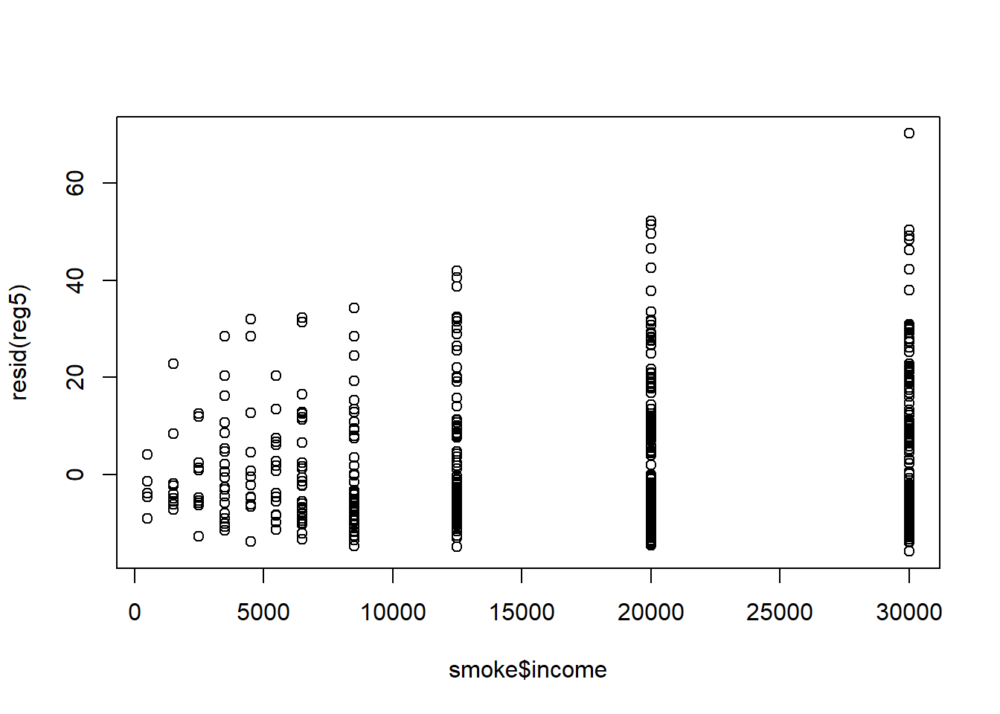

Homoskedasticity assumption states that the variance of the unobserved error u, conditional on the explanatory variables, is constant. It fails (so we have heteroskedasticity) whenever the variance of the unobserved factors changes across different segments of the population. It is important to remember that heteroskedasticity does not cause bias or inconsistency in the OLS estimators, however, it causes confidence intervals and t-statistics not valid.
Formulas for OLS standard errors and related statistics have been developed that are robust to heteroskedasticity of unknown form. They are valid in large samples. It can be shown that a valid estimator for the variance of OLS estimator under assumptions MLR.1 through MLR.4 is
Using these formulas, the usual t test is valid asymptotically. The usual F statistic does not work under heteroskedasticity, but heteroskedasticity robust versions are available in most software.
How to derive a heteroskedasticity robust LM Statististic:
Even though we could just simply use heteroskedasticity robust standard errors, we are still interested to test whether heteroskedasticity is present to be sure that OLS is the most efficient linear estimator.
Steps in Breusch-Pagan Test for Heteroskedasticity (BP test):
Let’s try an example. You assume two models:
\[price = beta_0 + beta_1*lotsize + beta_2*sqrft + beta_3*bdrms + u\]
\[log(price) = beta_0 + beta_1*lotsize + beta_2*sqrft + beta_3*bdrms + u\]
R code is provided below.
library(lmtest); # you may need to install package lmtest if you never used it before## Loading required package: zoo##
## Attaching package: 'zoo'## The following objects are masked from 'package:base':
##
## as.Date, as.Date.numericdata(hprice1, package='wooldridge')
reg1 = lm(price~lotsize+sqrft+bdrms, data=hprice1)
summary(reg1)##
## Call:
## lm(formula = price ~ lotsize + sqrft + bdrms, data = hprice1)
##
## Residuals:
## Min 1Q Median 3Q Max
## -120.026 -38.530 -6.555 32.323 209.376
##
## Coefficients:
## Estimate Std. Error t value Pr(>|t|)
## (Intercept) -2.177e+01 2.948e+01 -0.739 0.46221
## lotsize 2.068e-03 6.421e-04 3.220 0.00182 **
## sqrft 1.228e-01 1.324e-02 9.275 1.66e-14 ***
## bdrms 1.385e+01 9.010e+00 1.537 0.12795
## ---
## Signif. codes: 0 '***' 0.001 '**' 0.01 '*' 0.05 '.' 0.1 ' ' 1
##
## Residual standard error: 59.83 on 84 degrees of freedom
## Multiple R-squared: 0.6724, Adjusted R-squared: 0.6607
## F-statistic: 57.46 on 3 and 84 DF, p-value: < 2.2e-16bptest(reg1)##
## studentized Breusch-Pagan test
##
## data: reg1
## BP = 14.092, df = 3, p-value = 0.002782# Manual regression of squared residuals
summary(lm( resid(reg1)^2 ~ lotsize+sqrft+bdrms, data=hprice1))##
## Call:
## lm(formula = resid(reg1)^2 ~ lotsize + sqrft + bdrms, data = hprice1)
##
## Residuals:
## Min 1Q Median 3Q Max
## -9044 -2212 -1256 -97 42582
##
## Coefficients:
## Estimate Std. Error t value Pr(>|t|)
## (Intercept) -5.523e+03 3.259e+03 -1.694 0.09390 .
## lotsize 2.015e-01 7.101e-02 2.838 0.00569 **
## sqrft 1.691e+00 1.464e+00 1.155 0.25128
## bdrms 1.042e+03 9.964e+02 1.046 0.29877
## ---
## Signif. codes: 0 '***' 0.001 '**' 0.01 '*' 0.05 '.' 0.1 ' ' 1
##
## Residual standard error: 6617 on 84 degrees of freedom
## Multiple R-squared: 0.1601, Adjusted R-squared: 0.1301
## F-statistic: 5.339 on 3 and 84 DF, p-value: 0.002048reg2=lm(log(price)~lotsize+sqrft+bdrms, data=hprice1)
summary(reg2)##
## Call:
## lm(formula = log(price) ~ lotsize + sqrft + bdrms, data = hprice1)
##
## Residuals:
## Min 1Q Median 3Q Max
## -0.73389 -0.10792 -0.01595 0.11181 0.63914
##
## Coefficients:
## Estimate Std. Error t value Pr(>|t|)
## (Intercept) 4.759e+00 9.354e-02 50.883 < 2e-16 ***
## lotsize 5.602e-06 2.038e-06 2.749 0.00732 **
## sqrft 3.641e-04 4.201e-05 8.668 2.77e-13 ***
## bdrms 2.524e-02 2.859e-02 0.883 0.37992
## ---
## Signif. codes: 0 '***' 0.001 '**' 0.01 '*' 0.05 '.' 0.1 ' ' 1
##
## Residual standard error: 0.1899 on 84 degrees of freedom
## Multiple R-squared: 0.6223, Adjusted R-squared: 0.6088
## F-statistic: 46.13 on 3 and 84 DF, p-value: < 2.2e-16bptest(reg2)##
## studentized Breusch-Pagan test
##
## data: reg2
## BP = 3.5427, df = 3, p-value = 0.3153In the first regression we find heteroskedasticity present. As we discussed earlier, log functional form often solves issues. In this case, log-level form is homoskedastic.
White test adds squares and cross products of all the independent variables to the regression of OLS residuals on the independent variables (step 2 in BP test). However, due to too many degrees of freedom lost, there is an alternative form of the test.
White Test for Heteroskedasticity: Estimate the model by OLS. Obtain the squared residuals and fitted values, and compute their squares. Regress the squared residuals on fitted values and squared fitted values. Compute the p-value from either F or LM statistics and compare with your chosen sign. level. See example code how we can check for heteroskedasticity with BP and White tests. In the house price example using the log of price below, we fail to reject homoskedasticity using either test.
data(hprice1, package='wooldridge')
reg2 = lm(log(price)~log(lotsize)+log(sqrft)+bdrms, data=hprice1)
bptest(reg2) # BP test##
## studentized Breusch-Pagan test
##
## data: reg2
## BP = 4.2232, df = 3, p-value = 0.2383bptest(reg2, ~ fitted(reg2) + I(fitted(reg2)^2) ) # White test##
## studentized Breusch-Pagan test
##
## data: reg2
## BP = 3.4473, df = 2, p-value = 0.1784Weighted Least Squares (WLS) requires us to know the form of heteroskedasticity. In WLS, we adjust independent variables in such way to eliminate heteroskedasticity. If the other Gauss-Markov assumptions hold as well, OLS applied to the transformed model is the best linear unbiased estimator. Why is WLS more efficient than OLS in the original model? Observations with a large variance are less informative than observations with small variance and therefore should get less weight. WLS is a special case of generalized least squares (GLS)
For example, let’s look at how net total financial wealth depends on income for single people. Run the following code in R.
data(k401ksubs, package='wooldridge')
library(stargazer);##
## Please cite as:## Hlavac, Marek (2018). stargazer: Well-Formatted Regression and Summary Statistics Tables.## R package version 5.2.2. https://CRAN.R-project.org/package=stargazerlibrary(sandwich);
reg3=lm(nettfa ~ inc + I((age-25)^2) + male + e401k, data=k401ksubs, subset=(fsize==1))
bptest(reg3)##
## studentized Breusch-Pagan test
##
## data: reg3
## BP = 15.711, df = 4, p-value = 0.003433reg3b=coeftest(reg3, vcov = vcovHC(reg3)) # Heteroskedasticity robust standard errors
reg4=lm(nettfa ~ inc + I((age-25)^2) + male + e401k, weight=1/inc, data=k401ksubs, subset=(fsize==1))
stargazer(reg3b,reg4,type = "text")##
## ========================================================
## Dependent variable:
## ------------------------------------
## nettfa
## coefficient OLS
## test
## (1) (2)
## --------------------------------------------------------
## inc 0.771*** 0.740***
## (0.100) (0.064)
##
## I((age - 25)2) 0.025*** 0.018***
## (0.004) (0.002)
##
## male 2.478 1.841
## (2.065) (1.564)
##
## e401k 6.886*** 5.188***
## (2.292) (1.703)
##
## Constant -20.985*** -16.703***
## (3.520) (1.958)
##
## --------------------------------------------------------
## Observations 2,017
## R2 0.112
## Adjusted R2 0.110
## Residual Std. Error 7.065 (df = 2012)
## F Statistic 63.127*** (df = 4; 2012)
## ========================================================
## Note: *p<0.1; **p<0.05; ***p<0.01Using BP test we find heteroskedasticity present in reg3. Therefore, we obtain heteroskedasticity robust standard errors. Also, we compute weighted least squares. WLS standard errors are smaller implying these estimates are more efficient.
If the observations are reported as averages at the city/county/state/-country/firm level, they should be weighted by the size of the unit. If errors are homoskedastic at the individual-level, WLS with weights equal to firm size mi should be used. If the assumption of homoskedasticity at the individual-level is not exactly right, we can calculate robust standard errors after WLS (i.e. for the transformed model).
When we do not know the exact form of heteroskedasticity, we should use feasible GLS (FGLS). Steps in a feasible GLS procedure to correct for heteroskedasticity are:
For example, we are interested in smoke demand function. We postulate the following model: \[cigs = b0 + b1*log(income) + b2*log(cigprice) + b3*educ +b4*age + b5*age^2 + b6*restaurn + u\]
Since we suspect heteroskedasticity, we will use the BP test and if we find heteroskedasticity, we will use the FGLS estimation and compare the results with the original results.
In R, run the following code:
data(smoke, package='wooldridge')
library(lmtest);
library(stargazer);
reg5<-lm(cigs~log(income)+log(cigpric)+educ+age+I(age^2)+restaurn, data=smoke) #OLS
bptest(reg5) # BP test##
## studentized Breusch-Pagan test
##
## data: reg5
## BP = 32.258, df = 6, p-value = 1.456e-05plot(resid(reg5)~smoke$income) # plot residuals relative to income
logu2 = log(resid(reg5)^2) # FGLS: estimation of the variance function
varreg = lm(logu2~log(income)+log(cigpric)+educ+age+I(age^2)+restaurn, data=smoke)
w = 1/exp(fitted(varreg))
reg6=lm(cigs~log(income)+log(cigpric)+educ+age+I(age^2)+restaurn, weight=w ,data=smoke)
stargazer(reg5,reg6,type = "text")##
## ===========================================================
## Dependent variable:
## ----------------------------
## cigs
## (1) (2)
## -----------------------------------------------------------
## log(income) 0.880 1.295***
## (0.728) (0.437)
##
## log(cigpric) -0.751 -2.940
## (5.773) (4.460)
##
## educ -0.501*** -0.463***
## (0.167) (0.120)
##
## age 0.771*** 0.482***
## (0.160) (0.097)
##
## I(age2) -0.009*** -0.006***
## (0.002) (0.001)
##
## restaurn -2.825** -3.461***
## (1.112) (0.796)
##
## Constant -3.640 5.635
## (24.079) (17.803)
##
## -----------------------------------------------------------
## Observations 807 807
## R2 0.053 0.113
## Adjusted R2 0.046 0.107
## Residual Std. Error (df = 800) 13.405 1.579
## F Statistic (df = 6; 800) 7.423*** 17.055***
## ===========================================================
## Note: *p<0.1; **p<0.05; ***p<0.01The results are displayed below. We see that the variation in residuals increases with an increase in income. We run the BP test and find strong evidence against homoskedasticity. Therefore, we run the WLS and compare the results. We see that after adjusting for heteroskedasticity, income is now a significantly associated with number of consumed.
If the heteroskedasticity function is misspecified, WLS is still consistent under MLR.1 - MLR.4, but robust standard errors should be computed. If OLS and WLS produce very different estimates, this typically indicates that some other assumptions (e.g. MLR.4) are wrong. If there is strong heteroskedasticity, it is still often better to use a wrong form of heteroskedasticity in order to increase efficiency.
We may also have heteroskedasticity in linear probability models. The simplest way to deal with this is to continue using OLS but to also compute the robust standard errors. However, sometimes the OLS estimators are inefficient in LPM. We can use weighted least squares, however, we have to keep in mind a few things: it is infeasible if LPM predictions are below zero or greater than one. If such cases are rare, they may be adjusted to values such as .01/.99.
Estimating the Linear Probability Model (LPM) by Weighted Least Squares (WLS):
Homework Problems
Problem 1.
Consider the following model to explain sleeping behavior: \[sleep = b0 + b1*totwrk + b2*educ + b3*age + b4*age2 + b5*yngkid + b6*male + u\] 1. Write down a model that allows the variance of u to differ between men and women. The variance should not depend on other factors.
2. Use the data in sleep75 to estimate the parameters of the model for heteroskedasticity. (You have to estimate the sleep equation by OLS, first, to obtain the OLS residuals.) Is the estimated variance of u higher for men or for women?
3. Is the variance of u statistically different for men and for women?
Computer Exercise C6.
In Example 7.12, we estimated a linear probability model for whether a young man was arrested during 1986: \[arr86 = b0+ b1*pcnv + b2*avgsen + b3*tottime + b4*ptime86 + b5*qemp86 + u\] 1. Using the data in crime1, estimate this model by OLS and verify that all fitted values are strictly between zero and one. What are the smallest and largest fitted values?
2. Estimate the equation by weighted least squares, as discussed in Section 8.5.
3. Use the WLS estimates to determine whether avgsen and tottime are jointly significant at the 5% level.
Computer Exercise C14.
Use the data in beauty for this question.
1. Using the data pooled for men and women, estimate the equation: \[log(wage) = b0 + b1*belavg + b2*abvavg + b3*female + b4*educ + b5*exper + b5*exper2 + u\] and report the results using heteroskedasticity-robust standard errors below coefficients. Are any of the coefficients surprising in either their signs or magnitudes? Is the coefficient on female practically large and statistically significant?
2. Add interactions of female with all other explanatory variables in the equation from part 1 (five interactions in all). Compute the usual F test of joint significance of the five interactions and a heteroskedasticity-robust version. Does using the heteroskedasticity-robust version change the outcome in any important way?
3. In the full model with interactions, determine whether those involving the looks variables - \(female*belavg\) and \(female*abvavg\) - are jointly significant. Are their coefficients practically small?
References
Wooldridge, J. (2019). Introductory econometrics: a modern approach. Boston, MA: Cengage.
Heiss, F. (2016). Using R for introductory econometrics. Düsseldorf: Florian Heiss,CreateSpace.